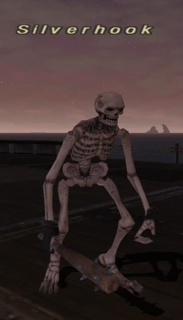

Level 75 reference · Zenith rules
|
Job: Black Mage Notorious Monster |
 |

|
Zone |
Level |
Drops |
Steal |
Spawns |
Notes |
|
68-70 |
1 |
A, T(H), HP | |||
|
HP = Detects Low HP; M = Detects Magic; Sc = Follows by Scent; T(S) = True-sight; T(H) = True-hearing JA = Detects job abilities; WS = Detects weaponskills; Z(D) = Asleep in Daytime; Z(N) = Asleep at Nighttime | |||||
Notes:
- Much larger than other skeletons
- Spawns with the pirates, on the ferry route from Selbina to Mhaura; only spawns during the Pirate event on the ferry when the middle pirate during the cut-scene is wearing a Vermillion Cloak.
- 18-24 hour spawn, with 2 copies of this NM spawning every 24 hours (one for each boat). Can spawn on any boat ride with pirate event including during the day time.
- Killable by: 4+ level 70+ characters, solo by a WHM/NIN, PLD/NIN, RDM/DRK, SMN/WHM at level 70+, duo'able by 2 BLM/RDM.
- Note: WHM/NIN is advised to bring an Icarus Wing and some Yagudo Drinks as you can run out of time or MP because of lacking damage (considering you have to cast quite a few spells when soloing as WHM).
- Special Attacks: Sleep, Sleepga II, all Ancient Magic (Flood, Freeze, etc.), Blizzard III, Blizzaga II, Waterga III.
Adapted from Eden Wiki: Silverhook · Contributors and history · CC BY-SA 4.0. Revision 46134. Layout, links and optional background text adapted for Zenith.